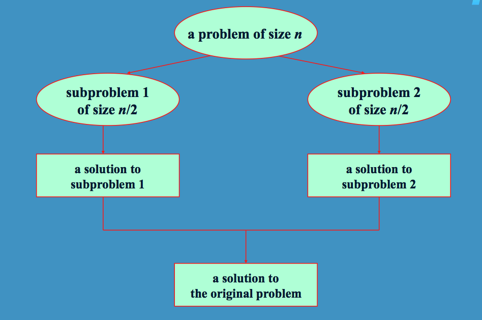

Sorting
Objectives
- Understand selection and insertion
sort algorithms.
- Understand faster merge sort and quick sort algorithms.
- Explore Java syntax that supports Comparable and generics.
Sorting is the task of arranging items in a natural order
i.e.
7 3 19 -2 14 6
15 9 0 --> -2 0 3
6 7 9 14 15 19
Quadratic Sorting Algorithms
Worksheet
Selection Sort - We
continually select the next smallest item
Insertion Sort - We insert
the next item from the unsorted region into the sorted region:
The algorithm below sorts an array a of length n where a[0] ....
a[n-1]
for i = 1 to n - 1
key
= a[i]
j =
i - 1
while j >= 0 and a[j] > key
a[j+1] = a[j]
j--
a[j+1] = key
Implementation
We now examine the gritty details of the necessary Java syntax.
Comparable Interface
Download the following file to see an example of Selection Sort
using Comparable objects (not generics).
- BasicSelectionSort.java
Normally, if we didn't use generics, we would use an array of
Objects. However, in this case, we want to sort our array, and not
all Objects have the compareTo()
method. Instead, we will need an array of Comparable objects.
The Comparable
interface has only one method in it: a compareTo() method,
that returns a negative integer, zero, or a positive integer if this
object is less than, equal to, or greater than the parameter.
Examine the code, and run it.
Generics
Now if we converted this code to use generics, our first try might
produce the following file:
- GenericsSelectionSort.java
Because all the methods in this class are generics, we need to
add < T >
after each "static"
in the method headers. This tells the code that we are using
generics in a static
method. (In the past, we only added < T > after the class name to use
generics with non-static methods.)
The selectionSort()
method now looks like
public
static < T >
void selectionSort(T[]
a, int n)
The problem with this code is the following line in the getIndexOfSmallest()
method:
if
(((Comparable)a[index]).compareTo(min) < 0)
The array "a"
is an array of T,
but we are typecasting to a Comparable. There might be a run-time
error here if the array "a"
does not contain a Comparable.
So we will also need to modify our code to make sure the
generic T
is also a Comparable.
We do that next.
Generics with Comparable
The next version
- GenericComparablesSelectionSort.java
adds the header to make sure we are only sorting Comparable objects:
public
static
< T extends Comparable < ? super T >> void selectionSort(T[] a, int n)
The ? represents any type that is a parent
of T.
This is a much better version and will not cause any run-time
errors. It allows us to sort objects that implement the Comparable
interface, or have parent classes that implement Comparable.
Recursive Sorting Algorithms
Both insertion and selection sorts are known as quadratic O(n2)
algorithms. In this section we examine two sorting algorithms that
provide better performance.
These algorithms implement what is known as a divide and conquer
strategy:

Merge Sort
- Mergesort Worksheet
Mergesort in the Java API.
General Algorithm
mergesort(array, first, last)
{
if
(first < last)
{
mid = (first + last) / 2
// recursively call merge sort on the two
halves
mergesort(array, first, mid)
mergesort(array, mid + 1, last)
// now merge sorted halves
merge(array, first, last)
}
}
Quick Sort
General idea
(1) Select a pivot P
(2) Partition
the list such that [ all items
<= P] P [all items >= P]
Quicksort in the Java API.